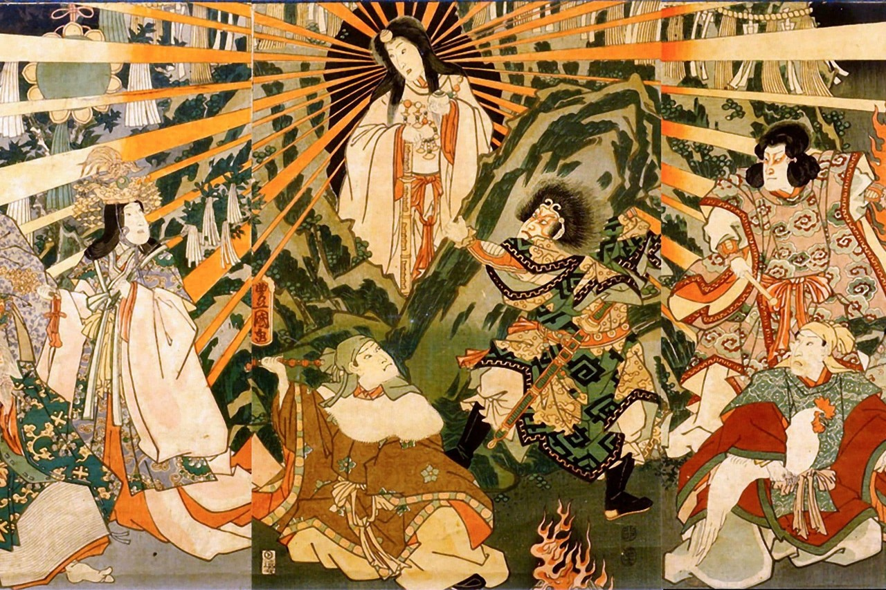
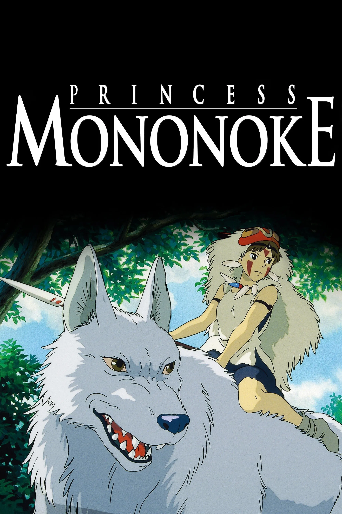

Shinto-inspired films often highlight the presence of kami (spirits), the sacredness of nature, and the fragile balance between humans and the spiritual world. Instead of focusing on doctrines, these stories explore ritual, purity, and the reverent bonds between people, land, and the unseen.

Hayao Miyazaki’s Princess Mononoke is steeped in Shinto imagery and ideas. Forest spirits, animal gods, and the clash between industry and nature reflect a world where the kami inhabit rivers, trees, and mountains. The film invites viewers to consider the cost of disrupting harmony with the natural and spiritual realms.